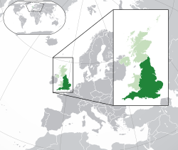

📚 Literatura e Ciência
A Inglaterra deu ao mundo mentes que mudaram a história. É a terra de William Shakespeare, Jane Austen e Charles Dickens.
Ciência: Foi aqui que Isaac Newton formulou a lei da gravidade e Charles Darwin a teoria da evolução.

A Inglaterra é um país que faz parte do Reino Unido. Sua história é marcada por grandes impérios, castelos medievais e cidades que misturam o antigo com o ultra-moderno. É o centro político e econômico da ilha da Grã-Bretanha.
A Inglaterra deu ao mundo mentes que mudaram a história. É a terra de William Shakespeare, Jane Austen e Charles Dickens.
Ciência: Foi aqui que Isaac Newton formulou a lei da gravidade e Charles Darwin a teoria da evolução.
A culinária inglesa é famosa por seus pratos clássicos servidos nos tradicionais Pubs.
A Inglaterra é o único país do Reino Unido que não possui um parlamento exclusivo; ela é governada diretamente pelo Parlamento do Reino Unido. Outra curiosidade é que a Inglaterra inventou o futebol moderno, o râguebi e o críquete. Além disso, estima-se que em Londres existam mais de 300 línguas faladas diferentes devido à sua enorme diversidade!